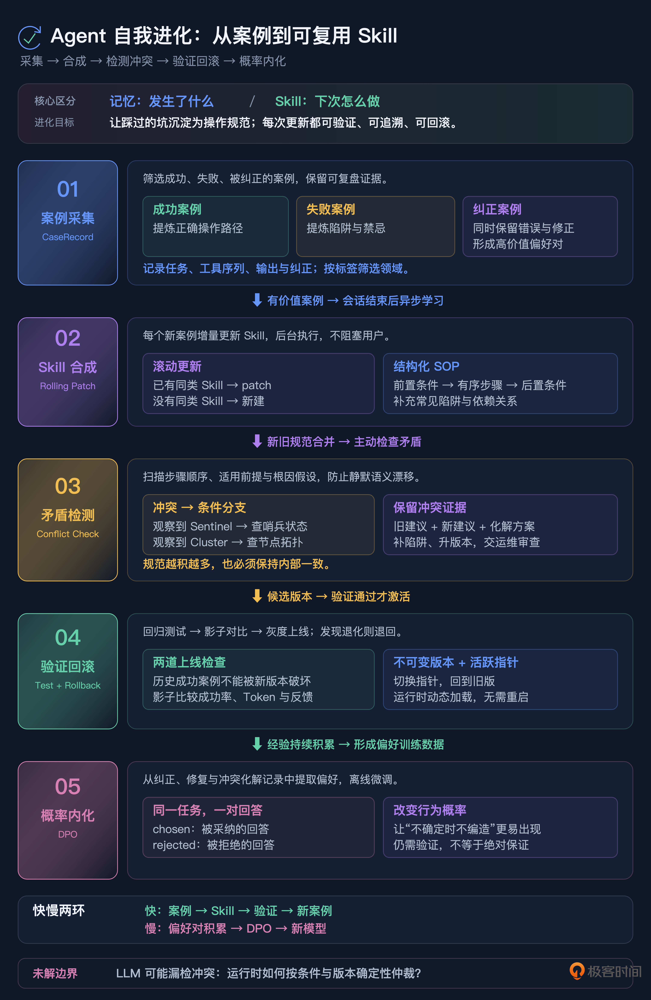

20｜别给 Prompt 当保姆了：构建 Agent 的自我进化系统
你好，我是李号双。
这节课我们来聊一聊如何构建 Agent 的自我进化系统。在此之前你先想象一个场景：你们上线了一个企业运维知识库 Agent，专门基于内部 Wiki 文档回答运维问题。Prompt 里三令五申：严格基于提供的上下文回答，没有就说不知道，绝不允许编造。测试时它表现得像个乖宝宝，问重启数据库照着文档答，问没写过的协议老老实实说不知道。上线两个月，大家都很满意。
直到运维部的老王问了句：生产环境 Redis 集群用的是哪种哨兵模式？
Agent 信心满满：Redis Sentinel V2，配置文件在 /etc/redis/sentinel-v2.conf。
老王照着路径去查——文件不存在。而且你们一直用 Redis Cluster，压根没用过 Sentinel。
查代码，一切正常。Prompt 没失效，模型确实遵守了指令。它只是基于 Redis 的通用世界知识填补了文档的空白——在模型看来，用户问了而文档没写，从训练数据里调一个最常见的标准答案来帮忙，是一种乐于助人的行为。
根因：人工维护 SOP 的速度跟不上犯错的速度
出了这种事，大多数人的第一反应是改 Prompt。在系统提示词里再加一条：如果涉及架构选型，必须明确说明文档中是否有相关描述。
有用吗？有用。但只对这一个坑有用。下周 Agent 可能在 Kafka 部署模式上脑补，下个月可能在数据库备份策略上瞎编。你加了一万条规则，它总能在第一万零一个地方翻车。
问题的本质不是 Prompt 写得不够好，而是人工维护操作规范（SOP）的速度，远远跟不上 Agent 犯错的速度。每踩一个坑，你就得半夜爬起来给 Prompt 打补丁；补丁越打越多，Prompt 越来越长，模型越来越记不住，形成恶性循环。
传统软件也有这个问题，但解法不一样。传统软件踩了坑，工程师写一条规则、加一个判断，下次就不会再犯——因为代码是确定性的。Agent 不一样，你在 Prompt 里加的规则是概率性的，模型可能遵守也可能忽略，而且规则多了反而互相干扰。
所以破局的关键不是继续跟 Prompt 死磕，而是让 Agent 自己从经验中沉淀可复用的操作规范——把“人写 SOP”变成“系统从案例中自动合成 SOP”。
这里我要先澄清一个概念。第 6 讲和第 7 讲我们讲了 Agent 的记忆系统——分类存储、混合召回、遗忘机制，那套体系管的是“记住发生了什么”。今天讲的是另一回事：从发生过的事情里提炼出“下次该怎么做”。记忆是事实的存档，Skill 是操作的规范。一个回答“是什么”，一个回答“怎么办”。两者有关联（Skill 从记忆中的案例提炼），但存储方式、召回逻辑、生命周期管理完全不同。
核心思想：Skill 合成引擎
整个体系的核心就一件事：把 Agent 跑过的每一个有价值的案例，自动提炼成可复用的 Skill，并且保证 Skill 的质量不会随着积累而退化。拆开来是五个环节，环环相扣：
下面我们逐个说透。
案例采集：什么样的经验值得沉淀
Agent 每天跑成百上千个会话，不是每个都值得存。如果全存，噪声会淹没信号，Skill 合成的质量也会下降。
值得沉淀的案例有三类：
成功案例：任务完成且用户反馈好。这类案例的价值在于“它的操作路径是对的”，可以提炼出正向的操作规范。
失败案例：任务失败或被系统拦截。价值在于“它的操作路径是错的”，可以提炼出“不要这么做”的陷阱。
纠正案例：Agent 初始回答被用户或系统纠正。价值最高——因为它同时提供了“错的答案”和“对的答案”，是天然的偏好对。老王手动纠正 Redis 幻觉的那一刻，就是一条高价值的纠正案例。
一条合格的案例记录，必须包含完整的推理路径，而不只是结果。因为 Skill 合成不仅要知道“最后答对了”，更要知道“是怎么一步步答对的”——用了哪些工具、按什么顺序、中间做了什么判断。
存是存全的，因为审计和复盘需要完整证据。但喂给 Skill 合成时，完整对话会撑爆上下文。工程上用“头尾保留、中间截断”：单个工具返回值超长时保留头部（调用意图）和尾部（结果与报错），中间折叠。既保住关键信号，又控制 Token 成本。
案例的检索靠标签，不需要重型向量数据库。从任务文本里抽取去停用词后的关键词作为标签，“Redis 集群模式配置”和“Redis 哨兵模式设置”提取出的标签都包含 redis，系统据此判定它们归属同一类问题。这套基于标签的检索，构成了后续 Skill 合成的基础。
Skill 合成：滚动 patch，不攒批次
有了案例，怎么提炼成 Skill？
最朴素的思路是攒一批成功案例，一次性喂给 LLM 做归纳。听起来合理，但工程上一塌糊涂：批次存在哪？攒够多少条才触发？触发前那一堆历史会话谁来维护？光是“攒”这个动作本身，就引入了一堆状态。
更轻的打法借鉴自 hermes-agent 的设计：不攒批次，每次有价值的案例立即补一次 Skill。Skill 文件本身是知识的载体，新案例是一个增量 delta，喂给 LLM 让它去 patch 已有 Skill。公式只有一句：skill(N) = patch(skill(N-1), 新案例)。不需要历史案例仓库，Skill 像一本活的工作手册，越用越厚。
整个 patch 流程不能卡在主循环里，LLM 合成一次 Skill 要几秒到几十秒，不能让用户等着。做法是在会话结束时，通过 Hook 自动触发后台任务：先异步把案例写进案例库（不阻塞返回），再丢一个任务到后台跑 patch。后台任务先用标签过滤，只处理你关心的领域，避免每次会话都触发合成；再探测 Skill 库有没有同类 Skill，有就 patch，没有就从零合成。合成的结果立即注册，下一个请求就能用上。
核心难点：语义漂移与矛盾检测
滚动 patch 这套机制很优雅，但有着一个致命的坑。
假设第一次案例沉淀出一条 Skill：“排查 Redis 问题，先查 Sentinel 状态。”一个月后，另一次案例（你们其实换成了 Cluster）又沉淀出：“先看 Cluster 节点拓扑。”如果朴素的 patch 把这两条直接拼进同一个 Skill 文档，会发生什么？
下次 Agent 读到它，两条相反的指令同时出现，互相抵消——Skill 就废了。这个失败模式叫语义漂移。
它之所以致命，是因为静默发生。系统不会报错，Skill 文档看起来还在变厚，但内部已经自相矛盾。等你发现 Agent 回答开始抽风，去翻 Skill 库，面对一本自相矛盾的工作手册，根本不知道是哪次 patch 引入的冲突。
如何解决这个问题呢？
补丁时不能让 LLM 做无脑合并，得逼它先主动做一次矛盾检测。patch 的 Prompt 强制走四步：
扫描矛盾：把已有 Skill 的每一条步骤、每一条 pitfall，和新案例的推理过程逐条比对，找出顺序冲突、前提冲突、根因假设冲突。
冲突时不覆盖，改写成条件分支：“先查 Sentinel”和“先看 Cluster 拓扑”不该二选一，而该变成“当观察到 Sentinel 进程存在：查 Sentinel；当观察到 cluster 节点：查拓扑”。两条都留，用观察条件区分。
补全新暴露的陷阱：新案例如果揭示了旧 Skill 没覆盖到的坑，补进去。
升一个 minor 版本号，方便事后回滚。
矛盾本身也不会被吞掉。LLM 会把每一条冲突连同新旧建议和解决方案，吐到一个 contradictions_detected 数组里，落盘后反馈给运维审查。语义漂移因此从“静默失效”变成“可见的告警”，你能在 Skill 文件里直接看到哪次 patch 引入了冲突、是怎么用条件分支化解的。
滚动累加不怕学得少，就怕学进来的东西在文档里互相打架。每次 patch 都能接住冲突，Skill 才能越用越厚而不是越用越乱。
Skill 的结构化表示：从文本到可执行 SOP
hermes-agent 的另一个精髓是：Skill 不是一段纯文本，是一个结构化的可执行对象。
如果 Skill 只是一段文字描述，Agent 读到它之后怎么用、用得对不对，全靠模型自己理解，又回到了概率的老路上。结构化表示把 Skill 变成一个有明确接口的对象：
前置条件：什么情况下该用这个 Skill，比如“当任务涉及 Redis 排查且观察到 Sentinel 进程时”。
执行步骤：有序的操作序列，每一步可以是工具调用或子 Skill。
后置条件：执行完应该达到什么状态。
常见陷阱：历史上踩过的坑和规避方法。
依赖关系：这个 Skill 调用了哪些其他 Skill。
结构化表示的好处是：Skill 可以被测试、被版本管理、被依赖检查。一段文本 Skill 你没法自动验证它对不对，但一个有前置条件和执行步骤的结构化 Skill，你可以跑回归测试，给它一个测试输入，看它的步骤序列是否符合预期。
存储与热更新：Skill 存在哪，为什么能秒级回滚
Skill 存在哪？为什么能秒级回滚？说清楚这两点，热更新就不神秘了。
企业级方案通常是三层存储：结构化元数据存在关系型数据库里（Skill ID、版本号、前置条件、标签、依赖关系、活跃状态），执行步骤和常见陷阱这些大文本存在数据库 TEXT 字段或对象存储里，运行时再缓存一份在进程内存里降低查询延迟。
版本管理的核心是“版本不可变 + 活跃指针可切换”。skill_versions 表里每个版本一条记录，INSERT 不 UPDATE；skill_active 表里每个 Skill 对应一个当前活跃版本号。加载时通过指针关联查询，不是写死版本号。回滚就是把活跃指针切回旧版本，数据库实现是一行 UPDATE skill_active SET active_version=?，原子的，事务提交后下一次查询立刻生效。
hermes-agent 走的是更轻的路线：每个 Skill 就是一个 Markdown 或 YAML 文件，丢在指定目录下。Agent 启动时扫描目录加载，运行时靠文件系统事件监听检测新增和修改。版本管理靠 Git，回滚是 git checkout。小团队够用，好处是零依赖、Git 就能做版本管理和 diff；代价是不支持原子回滚和多实例缓存同步，规模上来了还是得换数据库。
两种方案本质一样：版本内容不可变，当前活跃版本是一个可切换的指针。区别只是存储介质，数据库用 UPDATE 切指针，文件系统用 Git 切 commit。热更新的关键也只有一条：Agent 不持有 Skill 的静态副本，每次执行时从存储层动态拿，所以 Skill 的更新跟 Agent 进程没关系，不需要重启。
这也是为什么 Skill 不能塞进第 6 讲和第 7 讲的记忆系统里。记忆走向量库，召回是概率性的，有遗忘机制；Skill 走结构化存储，召回是确定性的条件匹配，有版本管理和回滚。一个是“大概相关就召回”，一个是“条件匹配就激活”，存储架构和召回逻辑完全不同。
验证与回滚：确保新 Skill 不会让系统退化
Skill 合成了、矛盾检测过了、结构化表示也有了，就能直接上线吗？不行。Agent 从经验里学，就可能学错，合成出一个坏 Skill，比没有 Skill 更危险，因为它会被反复调用。
每个新合成或更新的 Skill，上线前必须过两道关：
回归测试：用历史上的成功案例做测试集，给 Skill 一个输入，看它生成的步骤序列是否符合预期。如果新 Skill 让一个曾经成功的案例失败了，说明 patch 引入了退化，直接打回。
影子模式：回归测试过了也不能全量上线。新 Skill 先不实际执行，而是在真实流量中“旁观”，记录如果用了这个 Skill 会产生什么输出，和当前线上 Skill 的输出做对比。对比维度包括：成功率、Token 消耗、用户反馈。影子模式跑够一定量（比如 100 次调用），各项指标不劣于线上版本，才能转正。
万一上线后发现问题，回滚就是前面说的切指针，数据库一行 UPDATE，文件系统一次 git checkout，秒级生效。新版本还在版本库里躺着，随时可以再切回去。
从 Skill 到微调：把外围约束内化为概率本能
到这里，我们解决的是“外围约束”的问题：Skill 作为操作规范注入上下文，引导 Agent 按正确的路径走。但这有个局限：Skill 再完善，也是在推理时给模型一个“提醒”，模型可能遵守也可能忽略。老王那个 Redis 幻觉，即使 Skill 库里写了“不确定架构时要说不知道”，模型在长上下文的干扰下仍然可能脑补。
要真正治本，得回到概率层面，让“不确定时不编造”成为模型自己的直觉反应，而不是靠 Skill 提醒。这就是微调的用武之地。
但怎么调？传统的监督微调教模型“怎么做”，你得给标准答案让它模仿。可我们手里没有标准答案，有的是偏好：老王纠正了 Redis 的幻觉，说明“文档没写就说不确定”比“编一个 Sentinel V2”更受偏好。
这正是 DPO（直接偏好优化）的用武之地。DPO 不教模型“正确答案是什么”，而是教它“在这两个回答里该选哪个”。它需要的训练数据是成对的，同一个问题，一个被拒绝的回答，一个被采纳的回答。而这种数据，恰恰是 Skill 合成体系自然而然产出的副产品：
纠正案例里，Agent 的初始回答是 rejected，用户纠正后的答案是 chosen。
失败案例里，Agent 的操作路径是 rejected，人工修复后的路径是 chosen。
Skill 合成时的矛盾检测里，被覆盖的旧指令是 rejected，条件分支化解后的新指令是 chosen。
这些偏好对随着案例采集不断累积，到一定量级（通常几千条）就可以离线跑一次 DPO 微调。微调后的模型，“不确定时不回答”不再是 Skill 提醒的结果，而成了它自己的直觉反应，概率分布本身被改写了。
所以 Skill 和微调不是替代关系，是递进关系：Skill 是快速的外围约束，当天踩的坑当天就能沉淀成 Skill，下次就生效；微调是慢速的概率内化，攒够数据后跑一次，把反复出现的偏好刻进权重。前者解决“快”，后者解决“深”。
全景图
总结
这就是一次错误的进化之旅，从案例采集，到 Skill 生成、验证，再到偏好对积累和微调，我们走完了一个 Agent 自进化的路径，最后我把这节课的内容总结成了一张图，你可以复习参考。

思考题
我们用矛盾检测解决了 Skill 自相矛盾的问题，但矛盾检测本身依赖 LLM 的判断，它可能漏掉冲突，也可能误判两个不冲突的指令为冲突。
假设 LLM 在 patch 时漏掉了一个真实冲突，两条矛盾的指令同时存在于 Skill 中。Agent 执行时，它会随机选一条执行，导致行为不稳定，有时候查 Sentinel，有时候查 Cluster，完全不可预测。
在无法保证 LLM 矛盾检测 100% 准确的前提下，设计一种“运行时冲突仲裁”机制，让 Agent 在遇到矛盾 Skill 时不会随机选择，而是有一个确定性的仲裁策略。提示：结构化 Skill 的前置条件和版本号可以作为仲裁依据——新版本的条件分支应该覆盖旧版本的无条件指令，但怎么让 Agent 在运行时“知道”哪个是新版本、哪个该优先？
欢迎你在留言区分享你的设计，如果你有所收获，也欢迎你分享给需要的朋友！